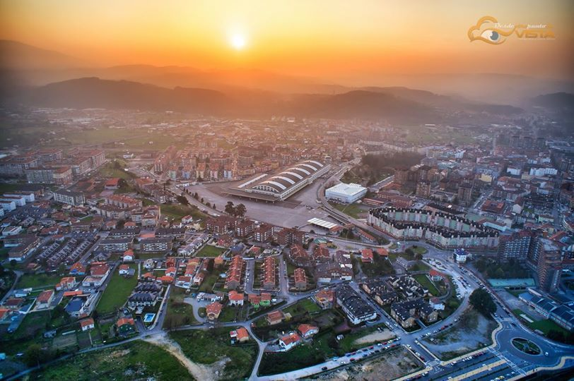

TORRELAVEGA
Vía Verde
La Lechera
Torrelavega es un municipio y ciudad del norte de España. La ciudad es de carácter industrial y comercial, siendo el segundo núcleo urbano más relevante de la comunidad autónoma de Cantabria por detrás de la capital autonómica Santander.
